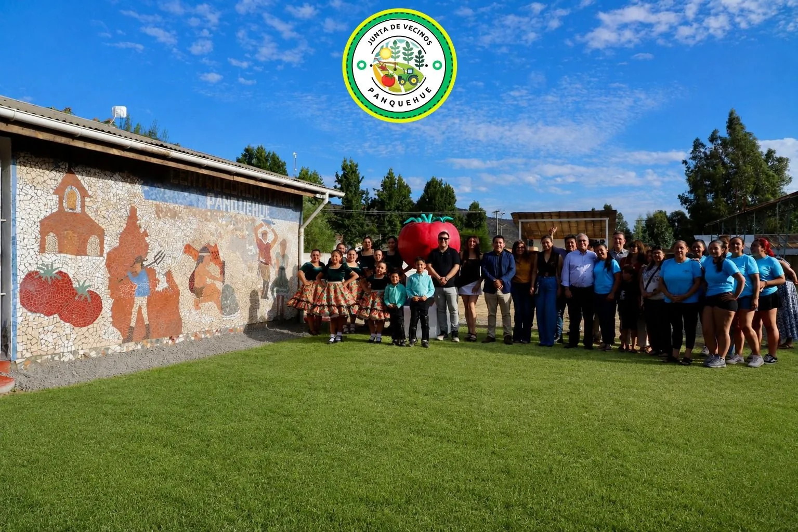

Junta de Vecinos de Panquehue

Punto de Cultura Comunitaria · Malloa
Organización territorial y comunitaria que impulsa la participación vecinal y el desarrollo sociocultural de Panquehue, comuna de Malloa, promoviendo actividades vinculadas a la identidad rural-campesina, la memoria local y las tradiciones comunitarias. Desde 1972 organiza el Festival del Tomate, hito cultural representativo del territorio.
Plan de Fortalecimiento 2026
«Sembrando Cultura: manteniendo vivas las tradiciones rurales e historia en Panquehue»
El plan busca fortalecer la sostenibilidad de las prácticas socioculturales y patrimoniales desarrolladas por la comunidad de Panquehue mediante el fortalecimiento organizacional, la activación cultural comunitaria y la puesta en valor de la memoria e identidad local. Asimismo, contempla talleres artísticos y de oficios, actividades patrimoniales, iniciativas de memoria comunitaria y espacios de encuentro cultural orientados a fortalecer la participación vecinal y el tejido social del territorio.
Fuente: Presentación del hito de firma de convenios de los Planes de Fortalecimiento de Puntos de Cultura Comunitaria 2026, región de O’Higgins. Ficha en construcción: la información y las fotografías se completarán con la organización.